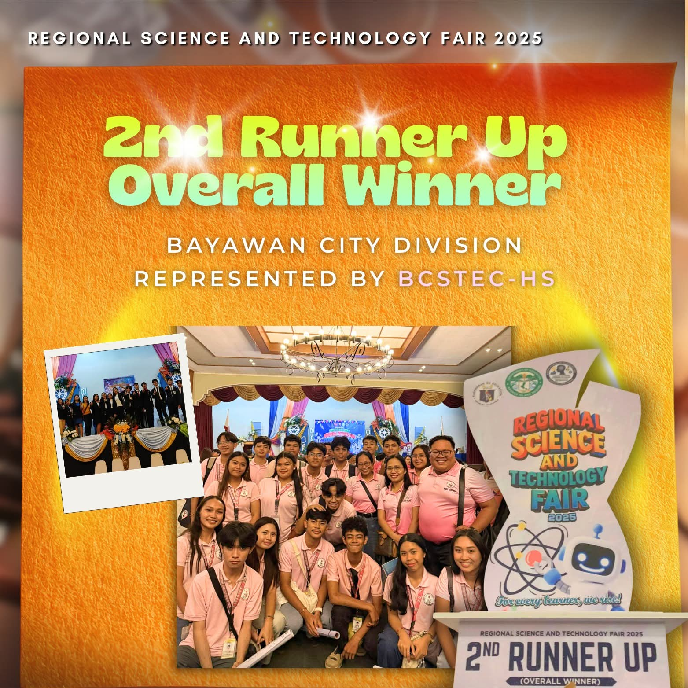
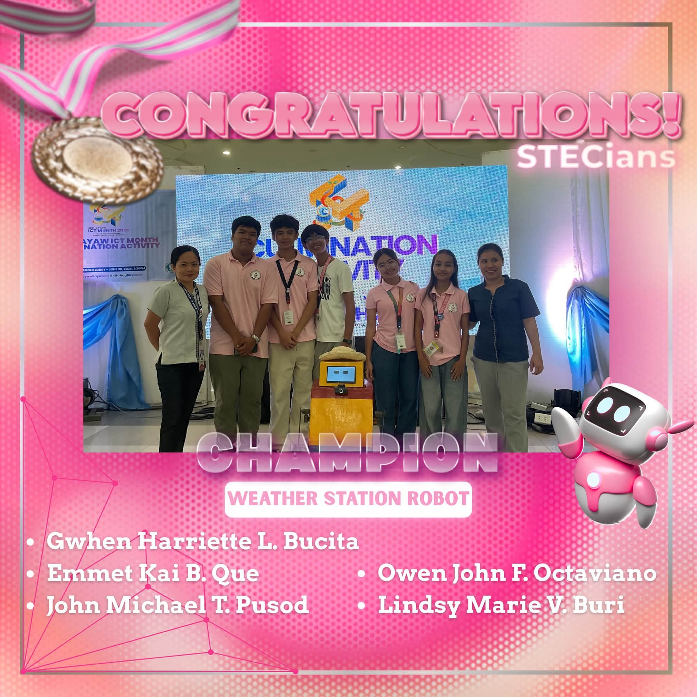
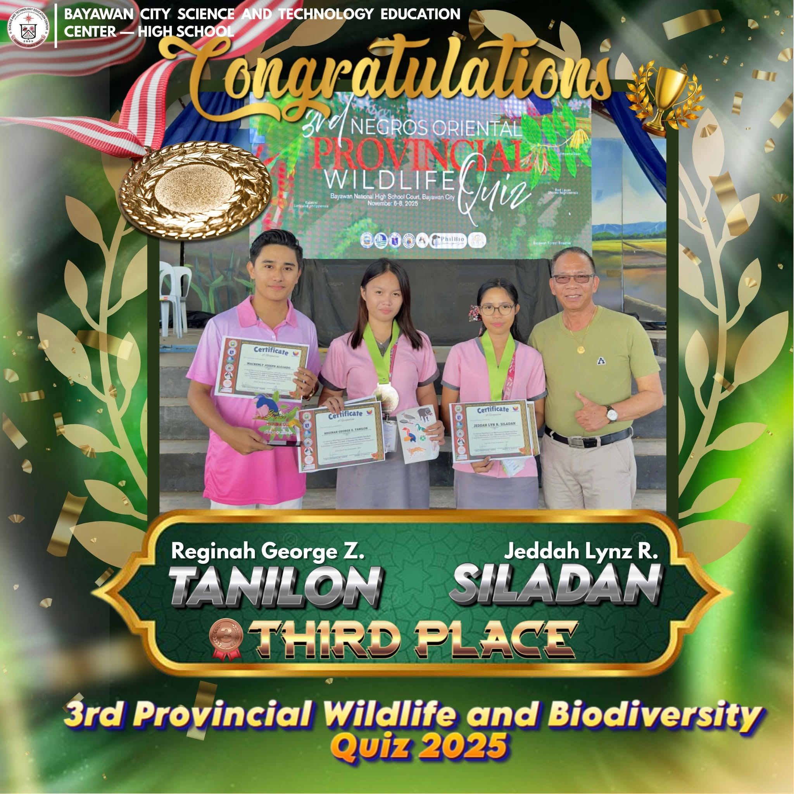
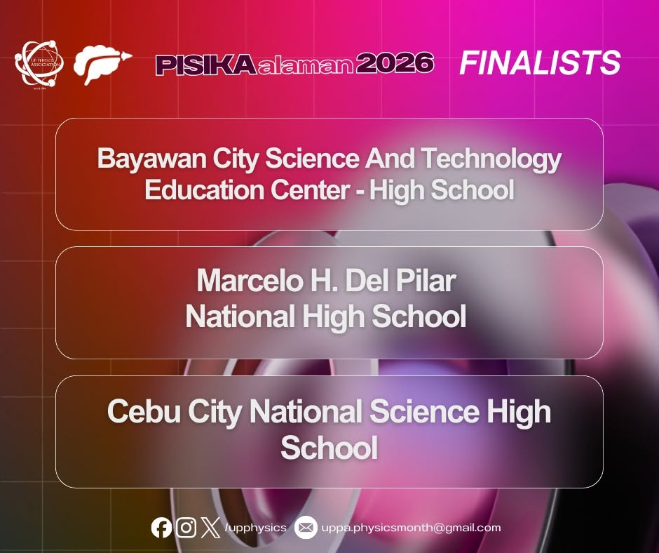
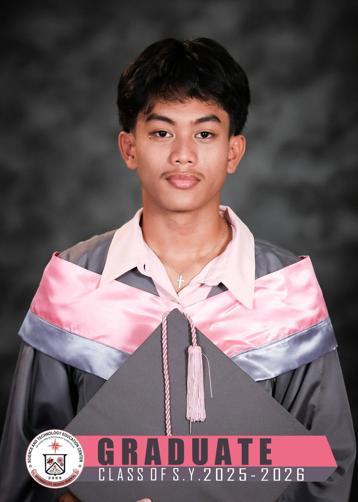
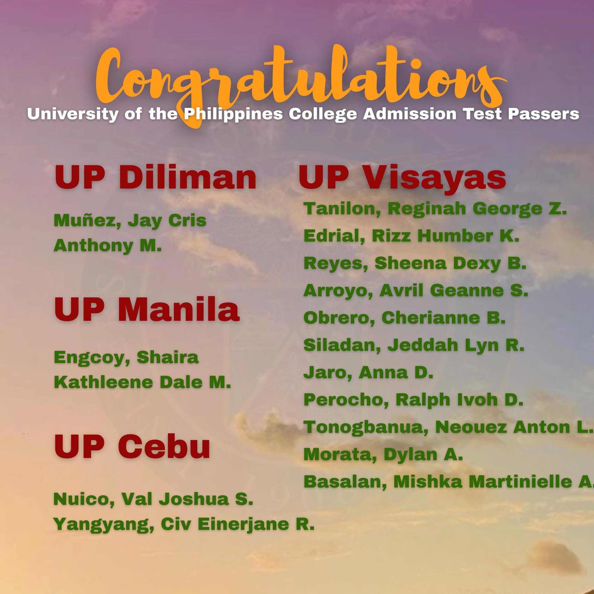

👩🏫 Faculty Recognition
The achievements of BCSTEC are strengthened by the dedication and professional excellence of its educators. Beyond classroom instruction, our teachers continue to create meaningful impact through leadership, mentorship, and commitment to quality education.
Mrs. Lorename T. Lacdao was recognized as a Regional Shortlisted Nominee of the Civil Service Commission Gawad Dangal ng Bayan under the 2026 Gawad Lingkod Bayani Awards. She was also named a National Qualifier for the 2026 Metrobank Foundation Outstanding Filipino Award, one of the country's most prestigious career-service recognitions in the academe.
Highlights
- Regional Shortlisted Nominee – CSC Gawad Dangal ng Bayan, 2026 Gawad Lingkod Bayani Awards
- National Qualifier – 2026 Metrobank Foundation Outstanding Filipino Award
- Recognition of outstanding service and excellence in education
- Inspiration to fellow educators and learners

📰 Regional Schools Press Conference (Journalism)
BCSTEC learners brought honor to the institution through their outstanding achievements in campus journalism during the Regional Schools Press Conference. Their success reflects excellence in writing, broadcasting, communication, and responsible storytelling.
Journalism Achievements
- Sports Writing – 2nd Place Winner
Allainne Glace I. Ongue - Copy Reading and Headline Writing – 5th Place Winner
Mishka Martinielle Basalan - Science and Technology Writing Filipino – 2nd Place Winner
Rizz Humber K. Edrial - Television Broadcasting – Best Informercial (2nd Place)
- Radio Broadcasting – Best Anchor (4th Placer)
Lance Kirby Japinan - Radio Broadcasting Filipino – Best Script (4th Placer)
- Best Radio Production Filipino – 4th Place
These recognitions affirm BCSTEC's continued excellence in campus journalism and its mission of developing learners who use their voices to inform, inspire, and serve the community.

🧪 National Scientific Ability Competition 2025
BCSTEC–High School achieved remarkable recognition in the field of science and mathematics after being named the Top 4 Best Performing School in the Philippines during the National Scientific Ability Competition 2025.
National Recognition
- Top 4 Best Performing School in the Philippines
- Level 2 – Top 1 Best Coach: Jorinda Faith R. Bito-on
- Level 3 – Top 4 Best Coach: Marisol M. Masayon
- Level 4 – Top 19 Best Coach: Mackenly Joseph Alojado
- Level 5 – Top 10 Best Coach: Princess Annalou O. Montecastro

🔬 Regional Science and Technology Fair 2025
BCSTEC continued to demonstrate excellence in research and innovation by achieving the distinction of Overall Second Runner-Up Winner in the Regional Science and Technology Fair 2025.
The young researchers earned recognition across various categories, showcasing their creativity, scientific inquiry, and ability to develop innovative solutions in mathematics, computational science, robotics, intelligent machines, STEM innovation, life science, and physical science.
Research Achievements
- 1st Runner Up and Best Presenter – Mathematics and Computational Science Individual Category
Jay Chris Anthony M. Muñez - 2nd Runner Up – Mathematics and Computational Science Group Category
Jian Karlo Miguel C. Belingan
Rhea Maybelle A. Barredo
Rizz Humber K. Edrial - 3rd Runner Up and Best Presenter – Robotics and Intelligent Machines Individual Category
Owen John F. Octaviano - 3rd Runner Up – STEM Innovation Expo Individual Category
Hero Ace V. Ginete - 3rd Runner Up – STEM Innovation Expo Group Category
Doha Nikolai H. Artes
Kate Tiffany A. Belnas
Jevon James T. Espares - 4th Runner Up – Life Science Individual Category
Dylan A. Morata - 4th Runner Up – Physical Science Individual Category
Neouze Anton L. Tonogbanua

🤖 LGU First Robotics Competition 2026
BCSTEC learners showcased their technological expertise and innovation during the LGU First Robotics Competition 2026. Through robotics design, programming, and engineering, students demonstrated their ability to create technology-driven solutions for real-world challenges.
The robotics teams achieved championship and runner-up finishes in multiple categories, highlighting BCSTEC's growing excellence in robotics, engineering, and STEM education.
Competition Highlights
- Thematic Robot – Champion
Owen John F. Octaviano
Jevon James T. Espares - Weather Station Robot – Champion
Gwhen Harriette L. Bucita
Emmet Kai B. Que
John Michael T. Pusod
Owen John F. Octaviano
Lindsy Marie V. Buri - Soccer Bot – 1st Runner Up
Emmet Kai B. Que
John Michael T. Pusod
Gwhen Harriette L. Bucita
Xithandra B. Tan - Sumo Bot – 1st Runner Up
Jevon James T. Espares
Thomas Gabriel A. Dicen

🦋 Regional Biodiversity Wildlife Quiz Bee 2025
BCSTEC learners demonstrated their knowledge and passion for environmental conservation during the Regional Biodiversity Wildlife Quiz Bee 2025. Their achievement reflects the school's commitment to developing scientifically aware learners who understand the importance of protecting biodiversity and natural ecosystems.
Achievement
- 3rd Place – Regional Biodiversity Wildlife Quiz Bee 2025
- Jeddah Lyn R. Siladan
- Reginah George Z. Tanilon

⚛️ University of the Philippines PISIKAalaman Nationwide Physics Quiz Bowl 2026
BCSTEC continued to excel in physics and scientific reasoning through participation in the University of the Philippines National Institute of Physics PISIKAalaman Nationwide Physics Quiz Bowl 2026. The competition challenged learners' understanding of advanced physics concepts and their ability to apply scientific principles in solving complex problems.
National Recognition
- National Level Top Finalist
- Jay Chris Anthony M. Muñez – Nationwide Top 9 Scorer
- Lance Peter R. Lomonggo
- Rizz Humber Q. Edrial

🌎 Jay Cris Anthony M. Muñez International Olympiads
BCSTEC learner Jay Cris Anthony M. Muñez represented the school on the international stage through outstanding performances in various academic Olympiads and competitions. His achievements reflect the global competitiveness and academic excellence cultivated by BCSTEC.
International Achievements
- Finalist – ISEO
- Finalist – IAMO
- Finalist – INCHS
- Finalist – IMSO
- Finalist – GACO
- Gold Honour Award – IAAC
- Silver Honour Award – IYMC
- Special Honour Award – IPhyC
- Special Honour Award – IChC

🏅 Negros Island Regional Athletic Association Meet 2026 & Palarong Pambansa 2026 Qualifiers
Beyond academics, BCSTEC student-athletes showcased exceptional performance in the Negros Island Regional Athletic Association Meet (NIRAAM) 2026, bringing pride to the school through excellence in sports, discipline, and teamwork.
Their achievements continued as six athletes and one coach qualified for the Palarong Pambansa 2026, representing BCSTEC at the national level.
NIRAAM 2026 Achievements
- Wrestling – Overall Champion in NIRAAM 2026
- Brench Jaiden Contemplacion – Gold, 54 kgs Cadets Boys Category
- Lance Kirby Japinan – Gold, 62 kgs Juniors Boys Category
- Kate Leisly Cabasag – Gold, 56 kgs Juniors Girls Category
- Xyrah Reese Mendoza – Silver, 40 kgs Cadets Girls Category
- Jacky Aprille Tampioc – Silver, 52 kgs Cadets Girls Category
- Civ Einerjane Yangyang – Silver, 60 kgs Juniors Girls Category
- Archery – Overall 2nd Runner Up in NIRAAM 2026
- Shane Klauwie Enong – Gold (60 Meters Category)
- Shane Klauwie Enong – Silver (Mixed Team Category)
- Shane Klauwie Enong – Bronze (70 Meters Category)
- Chess
- Abby Vale Ebro – Bronze (Individual Standard Category)
- Vaden Drake Lomeda – Bronze (Rapid Team Category)
- Football Girls Secondary – Overall Champion
- Kirsten Mirador
Palarong Pambansa 2026 Qualifiers
- Kate Leisly Cabasag
- Brench Jaiden Contemplacion
- Lance Kirby Japinan
- Abby Vale Ebro
- Shane Klauwie Enong
- Kirsten Mirador
- Coach: Alfie T. Herrera
Additional Chess Achievement
- Vaden Drake Lomeda – Champion, 3rd Fil-Chinese Chamber of Commerce Under 14 Chess Tournament 2026

⛺ Scouts & Girl Scouts
BCSTEC learners continued to demonstrate leadership, service, and character through scouting. Their participation in national and international scouting activities reflects the school's commitment to developing responsible and service-oriented leaders.
Achievements
- 2025 Asia-Pacific Scouts Jamboree Delegates
- Princess Nicole A. Villaflor
- Princess Larah R. Bandoquillo
- Shzie Jhan C. Jao
- BSP Advancement Rank 2025–2026
- 1 Promoted as Venturer Scout
- 5 Promoted as Outdoor Scouts
- 8 Promoted as Pathfinder Scouts
- 30 Promoted as Explorer Scouts
Girl Scouts of the Philippines
- Janine Bernadette A. Barron – Chief Girl Scout of the Philippines Awardee

🎬 Regional PEACE Short Film Festival 2026
In the field of arts and advocacy, BCSTEC learners used creativity and storytelling to promote child protection, awareness, and responsible citizenship through the Regional PEACE Short Film Festival.
Recognition
- Special Award in Child Protection Advocacy
- Best Supporting Actress Nominee – Rheena Alleah Apoli

🎓 UP Qualifiers & DOST-SEI Scholars
BCSTEC's commitment to academic excellence is reflected in the success of its graduating learners. This year, students earned admission to the University of the Philippines and qualified for the prestigious DOST-SEI Scholarship, opening greater opportunities in science, technology, engineering, and mathematics.
14 UPCAT Passers
- UP Diliman
Jay Cris Anthony M. Muñez - UP Manila
Shaira Kathleene Dale M. Engcoy - UP Visayas
Reginah George Z. Tanilon
Rizz Humber K. Edrial
Sheena Dexy B. Reyes
Avril Geanne S. Arroyo
Cherianne Obrero
Jeddah Lyn R. Siladan
Anna D. Jaro
Ralph Ivoh D. Perocho
Neouze Anton L. Tonogbanua
Dylan A. Morata - UP Cebu
Val Joshua S. Nuico
Civ Einerjane R. Yangyang
DOST-SEI Scholarship Qualifiers
- Jay Cris Anthony M. Muñez
- Jeddah Lyn B. Siladan
- Clarence Q. Penas
